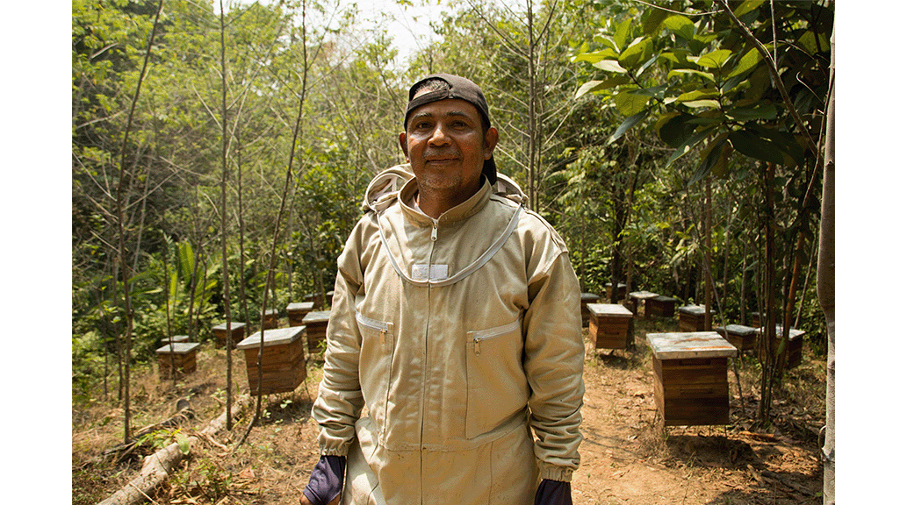

Módulo 1
Introducción
El sector privado
Relacionamiento con el sector privado
Aportes del sector privado
Enfoque de Mercado
Relacionamiento: directo, indirecto y de otros tipos
Subcategorías que integran las alianzas
Actores en el relacionamiento
Etapas del relacionamiento con el sector privado
Debida Diligencia
Ejercicio pedagógico
Módulo 2
Introducción
Relacionamiento directo e indirecto
Otros tipos de relacionamiento
Definiciones de fondos
Monitoreo de alianzas y fondos
Criterios a tener en cuenta
Ejercicio pedagógico
Módulo 3
Módulo 4
Introducción
El trabajo colaborativo y su alcance
- Paso 1
- Paso 2
- Paso 3
- Paso 4
- Paso 5
La acción colectiva
Enfoque de Colaboración, Aprendizaje y Adaptación
Propuestas de valor
Ejercicio pedagógico
Módulo 5
Introducción
1. CDyCS y CCSyC
- De qué se trata el CDyCS
- Modelo de implementación de CCSyC
- Principios generales para guiar la comunicación
2. Narración de impacto en USAID
- La narración de historias en el contexto de la CD
- Narrar las historias efectivas
- Publicar historias de éxito en las plataformas de USAID
- Consideraciones éticas en la narración de historias
- Formatos y plataformas para compartir historiass
Ejercicio pedagógico
¿Cuáles son los principios de relacionamiento
con el sector privado?
Principio 1
Relacionamiento temprano y continuo
Principio 2

Incentivar y valorar el relacionamiento con el sector privado a través del ciclo de programas
Principio 3
Expandir los enfoques y herramientas de USAID/Colombia para desbloquear el potencial del sector privado
Principio 4
Construir y actuar con base en la evidencia sobre lo que funciona o no en el relacionamiento con el sector privado
ANTERIOR
SIGUIENTE
Módulo 3. Los principios que rigen el relacionamiento
CONTENIDO
Introducción
¿Cuáles son los principios de relacionamiento con el sector privado?
Principio 1. Relacionamiento temprano y continuo
Principio 2. Incentivar y valorar el relacionamiento con el sector privado a través del ciclo de programas
Principio 3. Expandir los enfoques y herramientas de USAID/Colombia para desbloquear el potencial del sector privado
Principio 4. Construir y actuar con base en la evidencia sobre lo que funciona o no en el relacionamiento con el sector privado
Monitoreo, evaluación y aprendizaje para fortalecer la toma de decisiones basada en evidencia y la colaboración con el sector privado
Ejercicio pedagógico
RECURSOS
Referencias
Descargar contenido
CONTACTO
Contacta al Equipo de PSE